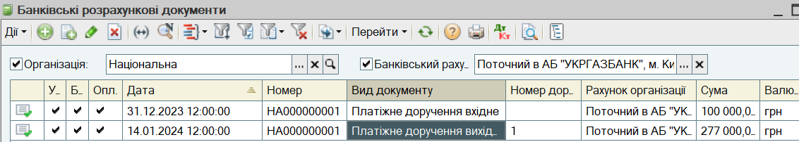
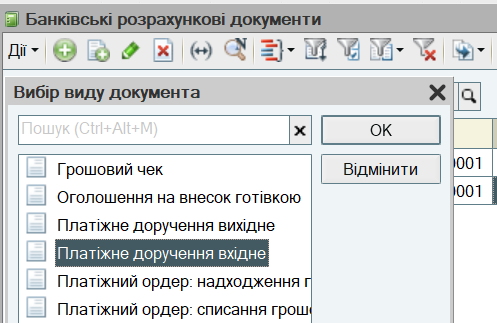
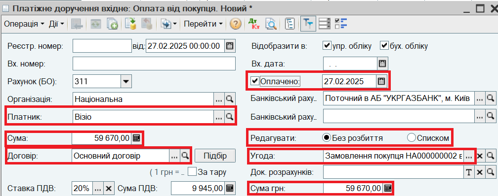
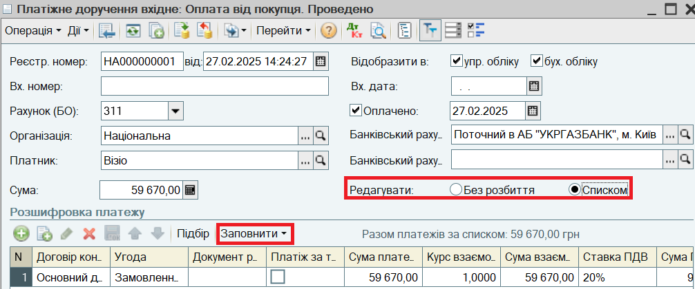

. У вікні, що відкрилося, виберіть вид документа Платіжне доручення вхідне.
. У вікні, що відкрилося, виберіть вид документа Платіжне доручення вхідне. Надходження безготівкових грошових коштів від покупця відображається документом Платіжне доручення вхідне з видом операціях Оплата від покупця.
1. Відкрийте журнал Банківські розрахункові документи. Для цього в меню Документи виберіть пункт Грошові кошти - Банк - Журнал "Банківські розрахункові документи".
В журналі можна встановити відбір за Організацією та Банківським рахунком.

2. Для введення нового платіжного доручення натисніть кнопку . У вікні, що відкрилося, виберіть вид документа Платіжне доручення вхідне.

3. Відкриється форма нового платіжного доручення вхідного. Заповніть документ:

4. Натисніть на кнопку ОК. При проведенні документа збільшиться залишок грошових коштів на банківському рахунку і зміниться стан взаєморозрахунків з покупцем. Замовлення покупця вважатиметься оплаченим.
ПОРАДА
Якщо покупець оплачує одночасно кілька замовлень (рахунків на оплату), інформація про замовлення вводиться в табличній частині Розшифровка платежу. Для цього перемикач Редагувати потрібно встановити в положення Списком. Для швидкого заповнення табличної частини можна скористатися кнопками Підбір або Заповнити.

ПОРАДА
Документ оплати може бути введений на підставі Замовлення покупця (Рахунка на оплату).
Наступний розділ: "Відвантаження товарів покупцю за рахунком"